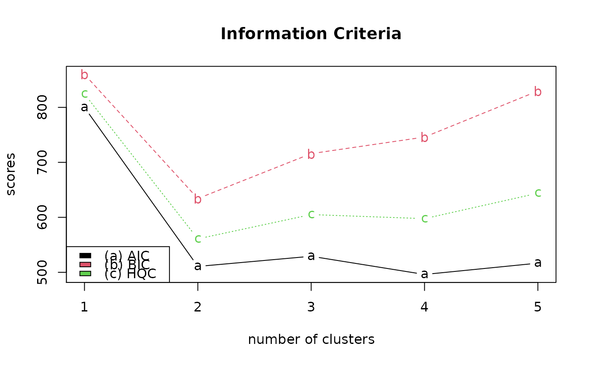

Model selection in GMM can be done in many ways, including Information Criterion (IC). Currently, we currently support Akaike (AIC), Bayesian (BIC), and Hannan-Quinn (HQC) scores for comparing models where a smaller value indicates a better model.
gmmscore(gmmobj)
| gmmobj | an output of any GMM routines in our package of |
|---|
a vector of information criteria scores.
Akaike H (1974-dec). “A New Look at the Statistical Model Identification.” IEEE Transactions on Automatic Control, 19, 716--723. doi: 10.1109/TAC.1974.1100705 .
Schwarz G (1978-mar). “Estimating the Dimension of a Model.” The Annals of Statistics, 6, 461--464. doi: 10.1214/aos/1176344136 .
Hannan EJ, Quinn BG (1979-jan). “The Determination of the Order of an Autoregression.” Journal of the Royal Statistical SocietySeries B (Methodological), 41, 190--195. doi: 10.1111/j.2517-6161.1979.tb01072.x .
# ------------------------------------------------------------- # clustering with 'iris' dataset # ------------------------------------------------------------- ## PREPARE data(iris) X = as.matrix(iris[,1:4]) ## FIT THE MODELS models = list() for (i in 1:5){ models[[i]] = gmm(X, k=i) } ## COMPUTE SCORES scores = c() for (i in 1:5){ scores = rbind(scores, gmmscore(models[[i]])) } ## VISUALIZE opar <- par(no.readonly=TRUE) matplot(scores, main="Information Criteria", type="b", xlab="number of clusters", pch=letters[1:3])